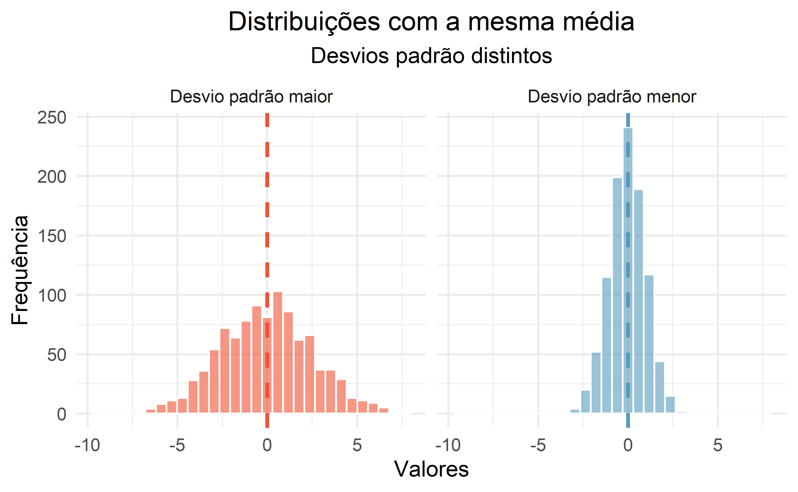

| fheight | sheight |
|---|---|
| 66.0 | 66.3 |
| 68.2 | 67.6 |
| 66.2 | 67.1 |
| 69.8 | 69.6 |
| 67.5 | 67.0 |
| 63.1 | 74.3 |
| 66.6 | 68.2 |
| 61.0 | 69.1 |
| 64.5 | 68.3 |
| 67.5 | 66.1 |
father.son
father.sonConjunto de dados de Pearson sobre alturas de pais e filhos
fheight: altura do pai em polegadassheight: altura do filho em polegadasfather.son| fheight | sheight |
|---|---|
| 66.0 | 66.3 |
| 68.2 | 67.6 |
| 66.2 | 67.1 |
| 69.8 | 69.6 |
| 67.5 | 67.0 |
| 63.1 | 74.3 |
| 66.6 | 68.2 |
| 61.0 | 69.1 |
| 64.5 | 68.3 |
| 67.5 | 66.1 |
father.son
mtcarsOs dados foram extraídos da revista Motor Trend US de 1974 e abrangem o consumo de combustível e 10 aspectos do design e desempenho de automóveis para 32 carros (modelos de 1973-74)
mpg: milhas/galão (km/l)cyl: número de cilindrosdisp: cilindrada (polegadas cúbicas)hp: potência bruta (cavalos de potência)drat: relação de transmissão do eixo traseirowt: peso (1000 lbs)qsec: tempo para 1/4 de milhavs: motor (0 = em forma de V, 1 = reto)am: transmissão (0 = automática, 1 = manual)gear: número de marchas para frentecarb: número de carburadoresmtcars| Modelo | wt | mpg | cyl |
|---|---|---|---|
| Maserati Bora | 3.6 | 15.0 | 8.0 |
| Cadillac Fleetwood | 5.2 | 10.4 | 8.0 |
| Honda Civic | 1.6 | 30.4 | 4.0 |
| Merc 450SLC | 3.8 | 15.2 | 8.0 |
| Datsun 710 | 2.3 | 22.8 | 4.0 |
| Merc 280 | 3.4 | 19.2 | 6.0 |
| Fiat 128 | 2.2 | 32.4 | 4.0 |
| Dodge Challenger | 3.5 | 15.5 | 8.0 |
| Merc 280C | 3.4 | 17.8 | 6.0 |
| Hornet Sportabout | 3.4 | 18.7 | 8.0 |
mtcars
diamondsUm conjunto de dados contendo os preços e outros atributos de quase 54.000 diamantes.
price: preço em dólares americanoscarat: peso do diamante (quilates)diamonds| carat | price |
|---|---|
| 0.7 | 1,771.0 |
| 0.4 | 1,053.0 |
| 1.1 | 4,640.0 |
| 0.5 | 2,467.0 |
| 0.3 | 758.0 |
| 1.0 | 5,755.0 |
| 1.0 | 6,097.0 |
| 2.0 | 17,422.0 |
| 1.6 | 12,343.0 |
| 1.0 | 4,525.0 |
diamonds
airqualityMedições diárias da qualidade do ar em Nova York, de maio a setembro de 1973
Ozone: quantidade de ozônio (ppb - partes por bilhão)Solar.R: irradiaçao solar (lang - 1 lang é igual a um caloria por centímetro quadrado)Wind: velocidade do vento (mph - milhas por hora)Temp: temperatura (F - graus Fahrenheit)Month: mês da mediçãoDay: dia da mediçãoairquality| Ozone | Solar.R | Wind | Temp | Month | Day |
|---|---|---|---|---|---|
| 41 | 190 | 7 | 67 | 5 | 1 |
| 36 | 118 | 8 | 72 | 5 | 2 |
| 12 | 149 | 13 | 74 | 5 | 3 |
| 18 | 313 | 12 | 62 | 5 | 4 |
| NA | NA | 14 | 56 | 5 | 5 |
| 28 | NA | 15 | 66 | 5 | 6 |
| 23 | 299 | 9 | 65 | 5 | 7 |
| 19 | 99 | 14 | 59 | 5 | 8 |
| 8 | 19 | 20 | 61 | 5 | 9 |
| NA | 194 | 9 | 69 | 5 | 10 |
airquality
Age datasetO conjunto de dados contém informações estruturadas sobre a vida, obra e morte de mais de 1 milhão de pessoas famosas falecidas.
Age of death: idade com que a pessoa morrreuAge dataset| Name | Age of death |
|---|---|
| Getúlio Vargas | 72 |
| João Guimarães Rosa | 59 |
| Glauber Rocha | 42 |
| Sócrates | 57 |
| Carlos Lacerda | 63 |
| Hebe Camargo | 83 |
| Ayrton Senna | 34 |
| Paulo Freire | 76 |
| João Goulart | 58 |
| Arthur Bispo do Rosário | 77 |
Age dataset
A fórmula da média:
\[ \bar{x} = \frac{\sum_{i=1}^n x_i}{n} \]
A formula da média em um formato um pouco mais simples: \[ \bar{x} = \frac{x_1 + x_2 + \cdots + x_n}{n} \]
Qual foi a média de temperatura dos cinco primeiros dias do mês de maio de 1973 em Nova York?
| Month | Day | Temp |
|---|---|---|
| 5 | 1 | 67 |
| 5 | 2 | 72 |
| 5 | 3 | 74 |
| 5 | 4 | 62 |
| 5 | 5 | 56 |
\[ \text{Temp} = \{67, 72, 74, 62, 56\} \]
\[ \bar{X} = \frac{67 + 72 + 74 + 62 + 56}{5} \]
\[ \bar{X} = \frac{331}{5} \]
\[ \bar{X} = 66.2 \]
Vamos calcular a média do consumo e do peso dos automóveis abaixo:
| Variável | Média |
|---|---|
| mpg | 18.8 |
| wt | 3.3 |
mpg e wt para uma amostra de automóveis
Qual medicamento é mais eficiente?
| Droga | Pacientes | Ataques |
|---|---|---|
| Nova | 500 | 200 |
| Padrão | 1000 | 300 |
| Droga | Pacientes | Ataques | Ataques/paciente |
|---|---|---|---|
| Nova | 500 | 200 | 0.4 |
| Padrão | 1000 | 300 | 0.3 |
Avalie qual time de basquete tem melhor desempenho em um campeonato:
| Time | Jogos | Pontuação Total |
|---|---|---|
| Mogi | 20 | 1500 |
| Fortaleza B. C. / CFO | 18 | 1400 |
| Pato Basquete | 22 | 1600 |
| Cerrado | 21 | 1550 |
| Time | Jogos | Pontuação Total | Pontos/jogo |
|---|---|---|---|
| Mogi | 20 | 1500 | 75.0 |
| Fortaleza B. C. / CFO | 18 | 1400 | 77.8 |
| Pato Basquete | 22 | 1600 | 72.7 |
| Cerrado | 21 | 1550 | 73.8 |
A princípio, a fórmula da variância parece complicada, mas vamos analisá-la parte por parte e você verá como ela pode ser simples de entender.
\[ s^2 = \frac{\sum_{i=1}^n (x_i - \bar{x})^2}{n-1} \]
Na tabela a seguir, estão as avaliações que o professor Zé recebeu de uma turma de cinco aluno em relação a uma disciplina ministrada. As notas atribuídas pelos alunos à avaliação do professor variavam de 1 a 5, onde 1 significa péssimo e 5 ótimo:
| Aluno | Avaliação do professor | |
|---|---|---|
| Joana | 1 | |
| Paulo | 2 | |
| Maria | 3 | |
| Adriana | 3 | |
| Pedro | 4 | |
| Média | 2.6 |
\(\bar{x} =\) 2.6
\[ s^2 = \frac{\sum_{i=1}^n \color{red}{(x_i - \bar{x})}^2}{n-1} \]
Note que a média em algums momentos subestima a avaliação dada por cada aluno e, em outros, superestima.
Chamamos de desvio a distância de uma observação da média da variável.
\(\bar{x} =\) 2.6
| Aluno | Avaliação do professor | Observaçao - média | Desvio da média |
|---|---|---|---|
| Joana | 1 | 1 - 2.6 | -1.6 |
| Paulo | 2 | 2 - 2.6 | -0.6 |
| Maria | 3 | 3 - 2.6 | 0.4 |
| Adriana | 3 | 3 - 2.6 | 0.4 |
| Pedro | 4 | 4 - 2.6 | 1.4 |
Agora que já temos os desvios, para saber a variabilidade total dos dados podemos somá-los, certo?
| Aluno | Avaliação do professor | Observaçao - média | Desvio da média | |
|---|---|---|---|---|
| Joana | 1 | 1 - 2.6 | -1.6 | |
| Paulo | 2 | 2 - 2.6 | -0.6 | |
| Maria | 3 | 3 - 2.6 | 0.4 | |
| Adriana | 3 | 3 - 2.6 | 0.4 | |
| Pedro | 4 | 4 - 2.6 | 1.4 | |
| Soma | 0 |
Zero? Esse resultado não faz sentido, porque claramente há variabilidade, como visto no gráfico anterior.
\[ s^2 = \frac{\sum_{i=1}^n \color{red}{(x_i - \bar{x})^2}}{n-1} \]
Para evitar que os valores positivos e negativos se cancelem na soma e dar mais peso aos desvios maiores, elevamos os desvios ao quadrado:
\[ {SS} = \sum_{i=1}^n (x_i - \bar{x})^2 = \sum(x_i - \bar{x})(x_i - \bar{x}) \]
| Aluno | Avaliação do professor | Observaçao - média | Desvio da média | Desvio ao quadrado | |
|---|---|---|---|---|---|
| Joana | 1 | 1 - 2.6 | -1.6 | 2.56 | |
| Paulo | 2 | 2 - 2.6 | -0.6 | 0.36 | |
| Maria | 3 | 3 - 2.6 | 0.4 | 0.16 | |
| Adriana | 3 | 3 - 2.6 | 0.4 | 0.16 | |
| Pedro | 4 | 4 - 2.6 | 1.4 | 1.96 | |
| Soma | 5.2 |
\(SS =\) 5.2
Com a soma dos erros dos desvios ao quadrao (\(SS = 5.2\)), já resolvemos a parte de cima da equção! Sabenos o número de observações, então também já temos o valor de \(n\) (\(n =\) 5).
\[ s^2 = \frac{\sum_{i=1}^n (x_i - \bar{x})^2}{n-1} = \frac{\color{red}{\text{SS}}}{n-1} = \frac{5.2}{n-1} \]
\[ s^2 = \frac{5.2}{5-1} = \frac{5.2}{4} = 1.3 \]
\[ s^2 = 1.3 \]
\[ s = \sqrt{s^2} \]
\[ s = \sqrt{\frac{\sum_{i=1}^n (x_i - \bar{x})^2}{n-1}} \]
Se já sabemos a variância das notas do professor Zé (\(s^2\) = 1.3), para calcular o desvio padrão (\(s\)), basta tirar a raiz quadrada desse valor:
\[ s = \sqrt{1.3} = 1.14 \]
É um tipo de distância típica de uma observação em relação à média (raiz quadrada da variância).
Vamos calcular a média e o desvio padrão para as avaliações da professora Irente e do professor Reinaldo.
\[ {SS} = \sum_{i=1}^n (x_i - \bar{x})^2 = \sum(x_i - \bar{x})(x_i - \bar{x}) \]
\[ s^2 = \frac{\sum_{i=1}^n (x_i - \bar{x})^2}{n-1} = \frac{\text{SS}}{n-1} \]
\[ s = \sqrt{\frac{\sum_{i=1}^n (x_i - \bar{x})^2}{n-1}} = \sqrt{s^2} \]
\[ {SS} = \sum_{i=1}^n (x_i - \bar{x})^2 = \sum(x_i - \bar{x})(x_i - \bar{x}) \]
\[ s^2 = \frac{\sum_{i=1}^n (x_i - \bar{x})^2}{n-1} = \frac{\text{SS}}{n-1} \]
\[ s = \sqrt{\frac{\sum_{i=1}^n (x_i - \bar{x})^2}{n-1}} = \sqrt{s^2} \]
Os dois professores têm a mesma média, mas a desvio padrão no caso da professora Irene é bem mais alto. O que isso nos diz sobre os dados?
| Professor | Média | Desvio padrão |
|---|---|---|
| Irene | 2.6 | 1.82 |
| Reinaldo | 2.6 | 0.55 |
Os dois professores tem a mesma médias nas avaliações dos alunos, mas as pontuações da professora Irene são mais dispersas, por isso o desvio padrão maior.
Use o qr-code ou o link abaixo para acessar o aplicativo:
Temp do banco de dados airquality:
| bins | Contagem |
|---|---|
| (0,60] | 8 |
| (60,65] | 10 |
| (65,70] | 15 |
| (70,75] | 19 |
| (75,80] | 33 |
| (80,85] | 34 |
| (85,90] | 20 |
| (90,95] | 12 |
| (95,100] | 2 |
Houve mais dias com temperaturas entre 80°F e 85°F do que com temperaturas entre 0°F e 60°F
Considere o seguinte conjunto de dados:
{52, 57, 53, 59, 62, 65, 67, 68, 69, 70, 72, 75, 78, 78, 79, 80, 82, 83, 85, 88, 90, 92, 93, 95, 96, 97, 98, 100, 102, 105}
1. Coloque os valores em ordem crestente:
{52, 53, 57, 59, 62, 65, 67, 68, 69, 70, 72, 75, 78, 78, 79, 80, 82, 83, 85, 88, 90, 92, 93, 95, 96, 97, 98, 100, 102, 105}
2. Conte a quantidade de casos no conjunto:
\(n\) = 30
3. Calcule a amplitude: maior caso - menor caso
\(Amplitude =\) 105 \(-\) 52 \(=\) 53
4. Determine o número de intervalos (bins)
Regra de Sturges:
\[ \text{Bins Ótimos} = \lceil \log_2(n) + 1 \rceil \] Onde:
4. Determine o número de intervalos (bins)
\[ \text{Bins Ótimos} = \lceil \log_2(30) + 1 \rceil = 6 \]
5. Largura dos intervalos: divida a amplitude (53) pelo número de intervalos:
\[ 53/6 = 8.83 \approx 9 \]
6. Calcule o limites dos intervalos: comece com o menor valor e adicione largura dos intervalos para determinar o limite superior da primeira classe
\(52 + 9 = 61\)
| Intervalo | Limite |
|---|---|
| 1 | 52 - 61 |
| 2 | 62 - 71 |
| 3 | 72 - 81 |
| 4 | 82 - 91 |
| 5 | 92 - 101 |
| 6 | 102 - 111 |
7. Conte os casos em cada intervalo:
| Intervalo | Limite | n | Casos |
|---|---|---|---|
| 1 | 52 - 61 | 4 | 52, 53, 57, 59 |
| 2 | 62 - 71 | 6 | 62, 65, 67, 68, 69, 70 |
| 3 | 72 - 81 | 6 | 72, 75, 78, 78, 79, 80 |
| 4 | 82 - 91 | 5 | 82, 83, 85, 88, 90 |
| 5 | 92 - 101 | 7 | 92, 93, 95, 96, 97, 98, 100 |
| 6 | 102 - 111 | 2 | 102, 105 |
Gere um histograma a partir da amostra abaixo que representa a altura dos alunos de uma turma em centímetros:
| Aluno | Altura |
|---|---|
| Pedro | 152 |
| Paulo | 165 |
| Ana | 158 |
| Mariana | 170 |
| João | 162 |
| Clara | 168 |
| Luiz | 155 |
| Sofia | 172 |
| Carlos | 160 |
| Beatriz | 163 |
| Ricardo | 157 |
| Fernanda | 166 |
| Lucas | 159 |
| Julia | 171 |
| Gabriel | 164 |
price, do banco de dados diamonds)sheight, do banco de dados father.son)Age of death, do banco de dados Age dataset1)Coeficiente de Assimetria de Fisher-Pearson:
\[ \gamma_1 = \frac{\sum_{i=1}^{n} (x_i - \bar{x})^3}{n \cdot s^3} \] Onde,
\(x_i - \bar{x}\): desvios da média
\(n\): total de casos
\(s\): desvio padrão
Vamos calcular o valor da assimetria a partir de uma nova amostra de dados da altura:
| Aluno | Altura |
|---|---|
| Leonardo | 152 |
| Mariana | 153 |
| Carlos | 151 |
| Ana | 154 |
| Bruno | 156 |
| Juliana | 160 |
| Renato | 159 |
| Fernanda | 163 |
| Lucas | 164 |
| Paula | 151 |
| Gabriel | 168 |
| Camila | 170 |
| Eduardo | 175 |
| Sofia | 180 |
| Ricardo | 182 |
\[ \gamma_1 = \frac{\sum_{i=1}^{n} (x_i - \bar{x})^3}{n \cdot s^3} \] \[ {SS} = \sum_{i=1}^n (x_i - \bar{x})^2 = \sum(x_i - \bar{x})(x_i - \bar{x}) \]
\[ s^2 = \frac{\sum_{i=1}^n (x_i - \bar{x})^2}{n-1} = \frac{\text{SS}}{n-1} \]
\[ s = \sqrt{\frac{\sum_{i=1}^n (x_i - \bar{x})^2}{n-1}} = \sqrt{s^2} \]
| Estatística | Valor |
|---|---|
| n | 15 |
| Média | 163 |
| SS | 1530 |
| Variância | 109 |
| Desvio parão | 10.45 |
| Assimetria | 0.53 |
Agora gere um histograma com a nova amostra da altura dos alunos. A distribuição dos dados condiz com o valor da assimetria?
Existe apenas um pico proeminente no histograma da altura dos filhos (sheight)
| cyl | n |
|---|---|
| 4 | 11 |
| 6 | 7 |
| 8 | 14 |
| Carros com 8 cilindros são mais frequentes | |


Whiskers: capturaram a maior parte dos dados, excluindo os outliers
Outliers: pontos excepcionalmente altos ou baixos, marcados separadamente no gráfico
Caixa como corpo, whiskers como braços tentando alcançar os dados até os outliers

Um outlier é uma observação que parece extrema em relação ao restante dos dados. Examinar os dados para identificar outliers tem vários propósitos úteis, incluindo:
No entanto, tenha em mente que alguns conjuntos de dados têm uma assimetria naturalmente longa, e pontos fora do padrão (outliers) não representam necessariamente qualquer tipo de problema no conjunto de dados.
Considere os cinco modelos de carro abaixo. Eles são os automóveis mais leves do banco de dados mtcars. O que aconteceria com as estatísticas dessa amostra se trocássemos o veículo mais leve (Lotus Europa) pelo quinto mais pesado de todo o banco de dados (Pontiac Firebird)? E o que aconteceria se o trocássemos pelo caro mais pesado de todos (Lincoln Continental)?
| Modelo | wt |
|---|---|
| Lotus Europa | 1.51 |
| Honda Civic | 1.61 |
| Toyota Corolla | 1.83 |
| Fiat X1-9 | 1.94 |
| Porsche 914-2 | 2.14 |
| Cenário | Mediana | IQR | Média | Desvio padrão |
|---|---|---|---|---|
| Dados originais | 1.83 | 0.32 | 1.81 | 0.25 |
| Sai Lotus Europa e entra Pontiac Firebird | 1.94 | 0.31 | 2.27 | 0.90 |
| Sai Lotus Europa e entra Lincoln Continental | 1.94 | 0.31 | 2.59 | 1.60 |
Considere os seguintes cenários: é melhor medir o lucro médio por cliente ou o lucro mediano por cliente?
A distribuição de valores do preço dos diamantes no banco de dados diamonds é assimétrico para a direita, com alguns diamantes caros na cauda direita. Se quiséssemos entender o preço típico de um diamante, você deveria estar mais interessado na média ou mediana?
Quando os dados são muito assimétricos, as vezes é preciso transformá-los para que seja mais fácil construir modelos. Abaixo estão a distribuição do preço dos diamantes e sua transformação logarítmica. Uma transformação é um redimensionamento dos dados usando uma função.
Os dados transformados são simétricos, e quaisquer outliers potenciais parecem muito menos extremos do que no conjunto de dados original. Ao controlar os outliers e a distorção extrema, as transformações geralmente facilitam a construção de modelos estatísticos para os dados.
\[ \frac{1}{\text{variável original}} \]